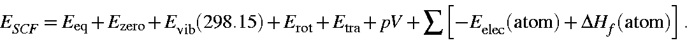
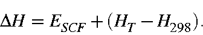
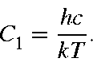
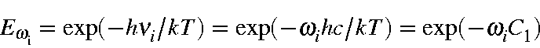
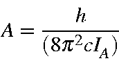

Next: Vibration Up: A Note on Thermochemistry Previous: Translational terms


Next: Vibration Up: A Note on Thermochemistry Previous: Translational terms
It should be noted that M.O. parameters for MINDO/3, MNDO, etc., are optimized so as to reproduce the experimental heat of formation (i.e., standard enthalpy of formation or the enthalpy change to form a mole of compound at 25oC from its elements in their standard state) as well as observed geometries (mostly at 25oC), and not to reproduce the Eeq and equilibrium geometry at 0 K.
In this sense, ESCF (defined as Heat of formation, DHf), force constants, normal vibration frequencies, etc. are all related to the values at 25oC, not to 0 K. Therefore, the Ezero calculated in FORCE is not the true Ezero. Its use as Ezeroshould be made at your own risk, bearing in mind the situation discussed above.
Since ESCF is standard enthalpy of formation (at 25 C):
C):

To avoid the complication arising from the definition of ESCF, within the thermodynamics calculation the Standard Enthalpy of Formation, DH, is calculated by

Here, ESCF is the heat of formation (at 25oC) given in the output list, and HT and H298 are the enthalpy contributions for the increase of the temperature from 0 K to T and 298.15, respectively. In other words, the enthalpy of formation is corrected for the difference in temperature from 298.15 K to T.
There is a problem in that HT is the heat of formation at T relative to the heat of formation of the elements in their standard state at 298K. This involves mixing standard and not standard terms. There is no easy way to get the correct value for HT, but for rough work HT is useful. For more correct work, calculate DH for the elements in their standard state at T, and use these DH's to get the DH for the compound you're working with (or use tables from the literature).
The method of calculation for T and H298 will be given below.
In MOPAC, the variables defined below are used:

The wavenumber,  , in cm-1:
, in cm-1:


The rotational constants A, B, and C in cm-1:

Energy and Enthalpy in cal/mol, and Entropy in cal/mol/K. Thus, the earlier Equations can be written as follows:


Next: Vibration Up: A Note on Thermochemistry Previous: Translational terms